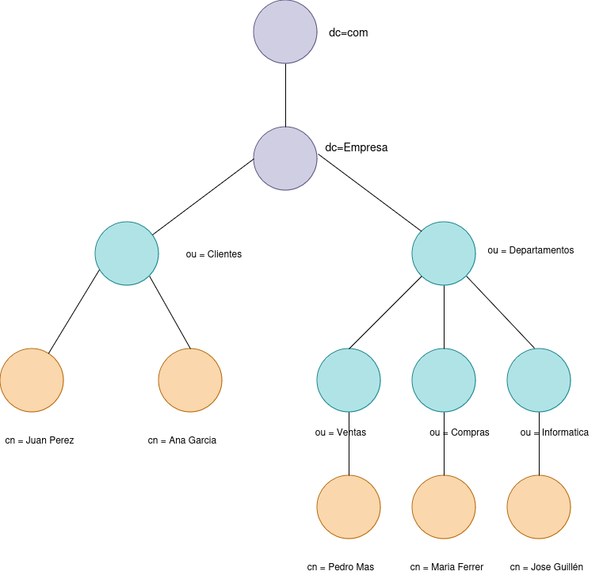

UT4. Servicio de Directorio en Linux
1. Introducción¶
Un servicio de directorio es un sistema especializado que almacena, organiza y proporciona acceso a información relacionada con los recursos de la red y los usuarios, actuando como un nexo centralizado para la gestión de la infraestructura de TI.
Los servicios de directorios, son un conjunto de aplicaciones que guardan y administran toda la información sobre los elementos de una red.
- Cada recurso de la red se considera como un objeto, donde su información se almacena como atributos.
- Para la gestión de esta información, el servicio de directorio establece una serie de permisos de acceso y condiciones de seguridad que la salvaguardan esta información.
- Ofrecen una infraestructura para localizar, manejar, administrar, y organizar los componentes y recursos comunes de una red.
2. Servicios de directorio destacados¶
Windows: Active Directory¶
- Active Directory (AD): La solución de Microsoft para servicios de directorio en entornos Windows. Es una base de datos y un conjunto de servicios que permiten la administración centralizada de usuarios, computadoras y otros recursos en un dominio de red.
- Características clave:
- Integración con Windows Server y otros productos Microsoft.
- Gestión de políticas de grupo y autenticación de usuarios.
- Soporte para LDAP y Kerberos.
Linux: OpenLDAP y Samba¶
- OpenLDAP:
- Un servicio de directorio de código abierto que implementa el protocolo LDAP.
- Utilizado para gestionar usuarios y recursos en redes Linux y multiplataforma.
- Samba:
- Permite la integración de servidores Linux/Unix en redes dominadas por Windows.
- Proporciona compatibilidad con Active Directory y servicios de directorio de Windows.
3. LDAP¶
LDAP, que significa Lightweight Directory Access Protocol (Protocolo Ligero de Acceso a Directorios), es un protocolo de red utilizado para acceder y administrar servicios de directorio a través de una red IP. Los servicios de directorio son bases de datos especializadas que almacenan información sobre recursos en una red, como usuarios, grupos, dispositivos y otros objetos.
Algunas características clave de LDAP son:
- Protocolo Ligero: LDAP es una versión simplificada del protocolo DAP (Directory Access Protocol) que facilita su implementación y uso.
- Acceso y Consulta: Permite a los clientes consultar, buscar y modificar información en un directorio de forma eficiente.
- Estructura Jerárquica: Los datos en un directorio LDAP se organizan en una estructura jerárquica similar a un árbol, lo que facilita la administración y búsqueda de información.
- Interoperabilidad: LDAP es ampliamente utilizado y soportado por muchos sistemas y aplicaciones, lo que facilita la integración y compatibilidad entre diferentes plataformas.
- Autenticación y Autorización: LDAP se usa comúnmente para gestionar la autenticación de usuarios y controlar el acceso a recursos en una red, especialmente en entornos empresariales y académicos.
Un ejemplo común de uso de LDAP es en la administración de directorios de usuarios en empresas, donde LDAP se utiliza para gestionar credenciales de acceso y permisos a diversos servicios y aplicaciones.
3.1 Estructura y Funcionamiento del Protocolo LDAP¶
LDAP sigue una estructura jerárquica en la que los datos se organizan en un árbol llamado DIT (Directory Information Tree). Cada nodo del árbol representa una entrada (entry), que es una colección de atributos. Cada atributo tiene un nombre y uno o más valores asociados. Por ejemplo, un usuario puede tener atributos como cn (Common Name), uid (User ID), mail (dirección de correo electrónico), y userPassword (contraseña).
- Distinguished Name (DN): Cada entrada en un directorio LDAP tiene un identificador único llamado DN. Este nombre distingue de manera única cada entrada dentro del directorio. Un DN se construye concatenando los nombres de los elementos desde la entrada hasta la raíz del árbol. Por ejemplo, un DN podría ser
uid=jdoe,ou=users,dc=example,dc=com, donde: uid=jdoe: indica el usuario con ID "jdoe".ou=users: indica que esta entrada está dentro de la unidad organizativa "users".dc=example,dc=com: indica que el dominio esexample.com.- Relative Distinguished Name (RDN): El RDN es la parte del DN que identifica una entrada en particular dentro de su nivel jerárquico. En el ejemplo anterior,
uid=jdoees el RDN para el usuario "jdoe".
3.2 Tipos de Directorios LDAP: DIT, DN, y más¶
- DIT (Directory Information Tree): Es la estructura jerárquica en la que se organizan las entradas LDAP. El DIT se construye como un árbol invertido, con la raíz en la parte superior y las ramas extendiéndose hacia abajo. Las ramas representan las distintas divisiones de la organización, como departamentos o ubicaciones, y las hojas del árbol representan los objetos, como usuarios o dispositivos.

- DN (Distinguished Name): Como se mencionó anteriormente, el DN es la ruta completa a una entrada en el DIT. Es un identificador único para cada entrada en el directorio. Se construye concatenando los nombres de los nodos desde la entrada hasta la raíz, utilizando una estructura jerárquica.
- uid=jperez: Identificador único del cliente "jperez".
- ou=clientes: Unidad organizativa "clientes".
-
dc=Empresa,dc=com: Dominio principal "Empresa.com".
-
Atributos y Objetos: Las entradas en LDAP se componen de atributos, que son pares nombre-valor, y de clases de objeto, que definen qué atributos puede o debe tener una entrada. Por ejemplo, una clase de objeto
inetOrgPersonpuede tener atributos comocn,sn(surname o apellido), ymail. -
Esquemas LDAP: El esquema define las reglas sobre qué clases de objeto y atributos pueden existir en el directorio. Establece la estructura de los datos permitidos en el directorio, definiendo qué tipos de objetos (como usuarios, grupos, etc.) pueden almacenarse y qué atributos puede tener cada uno. Los esquemas son cruciales para garantizar la coherencia de los datos dentro del DIT.
3.3 Formato de intercambio de datos LDIF (LDAP Data Interchange Format)¶
El formato LDIF (LDAP Data Interchange Format) es un estándar basado en texto plano que se utiliza para representar datos de un directorio LDAP y definir operaciones de modificación sobre dicho directorio.
En OpenLDAP, LDIF es esencial para:
- Construir la estructura inicial del DIT.
- Añadir usuarios, grupos y unidades organizativas en bloque.
- Modificar atributos existentes (correo, contraseña, grupo, etc.).
- Exportar datos del directorio para copias de seguridad o migraciones.
- Automatizar tareas de administración del directorio.
Sintaxis básica de una entrada LDIF¶
Una entrada se compone de:
- Una línea con el DN (Distinguished Name).
- Varias líneas con atributos en formato
atributo: valor. - Una línea en blanco para separar entradas.
Ejemplo:
dn: uid=usuario1,ou=People,dc=ejemplo,dc=com
objectClass: inetOrgPerson
objectClass: posixAccount
objectClass: top
uid: usuario1
cn: Usuario Uno
sn: Uno
uidNumber: 1001
gidNumber: 1001
homeDirectory: /home/usuario1
loginShell: /bin/bash
userPassword: 123456
Operaciones habituales en LDIF¶
Además de crear entradas nuevas, LDIF permite describir operaciones:
Añadir (add)
dn: uid=maria,ou=usuarios,dc=empresa,dc=com
changetype: add
objectClass: inetOrgPerson
cn: Maria López
sn: López
uid: maria
mail: maria@empresa.com
Modificar (modify)
dn: uid=maria,ou=usuarios,dc=empresa,dc=com
changetype: modify
replace: mail
mail: maria.nueva@empresa.com
Eliminar (delete)
Renombrar o mover (modrdn)
dn: uid=usuario1,ou=People,dc=ejemplo,dc=com
changetype: modrdn
newrdn: uid=usuario2
deleteoldrdn: 1
Detalles importantes del formato LDIF¶
- Si un valor contiene caracteres especiales, empieza por espacio o no es ASCII, se representa en Base64 usando
::. - Las líneas largas pueden plegarse iniciando la línea siguiente con un espacio.
- Algunos archivos incluyen metadatos como:
Comandos de OpenLDAP para trabajar con LDIF¶
Importar entradas
Modificar entradas
Exportar (backup del directorio)
Importar una base completa (modo offline)
Resumen¶
LDIF es el formato estándar de intercambio en LDAP.
Sirve para crear el DIT, añadir usuarios y grupos, modificar valores, migrar datos y automatizar la administración del servicio de directorio en Linux.
3.4 ObjectClass en LDAP: tipos y clases más utilizadas¶
Los objectClass definen el tipo de objeto que representa cada entrada del directorio LDAP.
Según el objectClass elegido, la entrada tendrá unos atributos obligatorios (MUST) y otros opcionales (MAY).
Existen tres categorías:
- Estructurales → definen qué “es” la entrada (usuario, grupo, OU, dominio…).
- Auxiliares → añaden atributos extra a una entrada ya existente (cuenta UNIX, shadow, sudo…).
- Abstractas → clases base de las que heredan las demás (normalmente solo
top).
A continuación se muestran los objectClass más importantes y utilizados en OpenLDAP.
Tabla de los objectClass más comunes¶
| objectClass | Tipo | Esquema | ¿Para qué se utiliza? | MUST (obligatorios) | MAY (opcionales) |
|---|---|---|---|---|---|
| top | Abstracta | core | Clase base de todas las entradas | — | — |
| domain | Estructural | core | Nodo raíz del dominio (dc=) | dc | associatedName |
| organization | Estructural | core | Representa una empresa u organización | o | telephoneNumber, description |
| organizationalUnit (ou) | Estructural | core | Estructura: contenedores del DIT | ou | description |
| person | Estructural | core | Representa una persona básica | sn, cn | telephoneNumber, userPassword |
| organizationalPerson | Estructural | core | Persona dentro de una organización | hereda MUST de person | title, postalAddress |
| inetOrgPerson | Estructural | inetorgperson/cosine | Usuario completo (el más usado) | sn, cn | mail, uid, mobile, employeeNumber |
| groupOfNames | Estructural | core | Grupo cuyos miembros son DN completos | member | description |
| groupOfUniqueNames | Estructural | core | Grupo con entradas únicas | uniqueMember | description |
| posixAccount | Auxiliar | nis | Usuario UNIX (UID, GID, home, shell) | cn, uid, uidNumber, gidNumber, homeDirectory | loginShell, gecos |
| shadowAccount | Auxiliar | nis | Atributos de contraseñas estilo shadow | uid | shadowLastChange, shadowExpire |
| posixGroup | Estructural | nis | Grupo UNIX con GID | cn, gidNumber | memberUid |
| ipHost | Auxiliar | nis | Representa un host con dirección IP | cn, ipHostNumber | l, description |
| device | Estructural | core | Representa un dispositivo físico | cn | serialNumber |
| simpleSecurityObject | Auxiliar | core | Entradas con contraseña simple | userPassword | — |
| organizationalRole | Estructural | cosine | Representa un rol dentro de la organización | cn | roleOccupant |
| room | Estructural | cosine | Habitaciones o espacios físicos | cn, roomNumber | phone, description |
| dhcpHost | Auxiliar | misc | Host gestionado por DHCP | dhcpHWAddress | dhcpOption |
| sudoRole | Auxiliar | sudo-ldap | Permisos sudo centralizados | cn | sudoUser, sudoCommand |
Cómo elegir correctamente los objectClass¶
- Para usuarios reales →
inetOrgPerson(+posixAccountsi se usan en Linux). - Para grupos UNIX →
posixGroup. - Para grupos genéricos →
groupOfNames. - Para estructura del DIT →
organizationalUnitydomain. - Para hosts o máquinas →
ipHost. - Para contraseñas tipo shadow → añadir
shadowAccount. - Para sudo centralizado →
sudoRole.
Reglas importantes¶
- Toda entrada LDAP debe tener solo un objectClass estructural principal.
- Puede tener varios objectClass auxiliares.
- Todos los objectClass heredan de top.
- Una mala elección de objectClass provoca errores al añadir la entrada.
Resumen¶
Los objectClass definen el tipo de cada entrada del directorio y determinan qué atributos puede o debe tener.
Conocer los objectClass más comunes permite diseñar un DIT coherente, válido y funcional para usuarios, grupos, dispositivos y servicios.
3.5 Ejemplos prácticos de LDAP en formato LDIF¶
En esta sección se muestran ejemplos completos y comentados de entradas LDAP en formato LDIF, tal y como se utilizan en OpenLDAP.
Los ejemplos incluyen: creación de la estructura del DIT, usuarios, grupos, modificaciones y operaciones habituales.
1. Crear la estructura base del directorio (DIT)¶
Este archivo crea el dominio dc=ies,dc=local y dos unidades organizativas: Usuarios y Grupos.
dn: dc=ies,dc=local
objectClass: top
objectClass: domain
dc: ies
dn: ou=Usuarios,dc=ies,dc=local
objectClass: top
objectClass: organizationalUnit
ou: Usuarios
dn: ou=Grupos,dc=ies,dc=local
objectClass: top
objectClass: organizationalUnit
ou: Grupos
2. Crear un usuario completo (inetOrgPerson + posixAccount + shadowAccount)¶
Este es el modelo recomendado para un usuario real en OpenLDAP integrado con Linux.
dn: uid=ana,ou=Usuarios,dc=ies,dc=local
objectClass: top
objectClass: person
objectClass: organizationalPerson
objectClass: inetOrgPerson
objectClass: posixAccount
objectClass: shadowAccount
uid: ana
cn: Ana García
sn: García
mail: ana.garcia@ies.local
uidNumber: 10001
gidNumber: 500
homeDirectory: /home/ana
loginShell: /bin/bash
userPassword: {SSHA}CONTRASEÑA_ENCRIPTADA
3. Crear un grupo UNIX (posixGroup)¶
dn: cn=profesores,ou=Grupos,dc=ies,dc=local
objectClass: top
objectClass: posixGroup
cn: profesores
gidNumber: 500
memberUid: ana
4. Crear un grupo general LDAP (groupOfNames)¶
dn: cn=EquipoDirectivo,ou=Grupos,dc=ies,dc=local
objectClass: top
objectClass: groupOfNames
cn: EquipoDirectivo
member: uid=ana,ou=Usuarios,dc=ies,dc=local
5. Modificar el correo de un usuario¶
6. Añadir un atributo nuevo a un usuario¶
7. Eliminar un atributo de una entrada¶
8. Cambiar el RDN (renombrar) de una entrada¶
9. Eliminar una entrada completa¶
10. Exportar el directorio a LDIF (backup)¶
Desde terminal:
11. Importar las entradas en el servidor LDAP¶
Alta de nuevas entradas:
Modificaciones:
Resumen¶
Estos ejemplos muestran cómo se crean usuarios, grupos, unidades organizativas y cómo se gestionan modificaciones en un directorio LDAP mediante LDIF.
Saber construir manualmente estos archivos es clave para administrar OpenLDAP de forma profesional y automatizada.